Plotting wisp models
Michael Barkasi
2026-02-08
tutorial_wispplots.RmdIntroduction
Wisp models can include thousands of parameters, each with their own intuitive physical interpretation. At bottom, wisp models are parameterized by a handful of fixed-effect spatial parameters – block rates, transition points, and transition slopes – plus random-effect scalars for each of these fixed-effect spatial parameters. However, the fixed-effect spatial parameters multiply with the number of species, the number of contexts, and the number of treatment conditions. The random-effect scalars multiply by replicate count and species. The upshot is that a wisp model will produce a dizzying array of parameter estimates and hypothesis test results. To help with interpretation, wispack includes a number of intuitive plotting options for visualizing wisp model results.
Rate-count plots
The backbone of wisp visualization is the rate-count plot, as in “predicted rate, observed count”. Rate-count plots come in two forms, one giving confidence-intervals (CI) and the other giving a scatter plot of observations.
Confidence intervals
The CI rate-count plot is a simplified line plot showing predicted rate as a function of spatial position, along with a 95% confidence interval for the rate at each spatial location. As a demonstration, let’s grab the model of the laminar axis of somatosensory cortex from the RORB tutorial:
# Set random seed for reproducibility
set.seed(123)
# Load wispack
library(wispack, quietly = TRUE)
# Load demo model
model <- readRDS(
system.file(
"extdata",
"corticallaminar_model.rds",
package = "wispack"
)
)Note that the saved model just loaded was made under exactly the same conditions as the original from the RORB tutorial, except that the wisp function was set, as in the following code chunk, to also run a thousand bootstraps in addition to the default MCMC walk. We want bootstraps because we will be plotting the model parameters below, and bootstraps generate more reliable parameter estimates than the MCMC walk.
model <- wisp(
count.data = countdata,
variables = data.variables,
plot.settings = list(
print.plots = FALSE,
dim.bounds = colMeans(layer.boundary.bins)
),
bootstraps.num = 1000,
max.fork = 5,
verbose = TRUE
)For now, for the rate-count plots, we can also grab the layer-boundary points from the CCFv3 registration for comparison:
layer.boundary.bins <- read.csv(
system.file(
"extdata",
"S1_layer_boundary_bins.csv",
package = "wispack"
)
)Let’s use the plot.ratecount function to reproduce the RORB plot that was made and shown in the previous tutorial:
plot.ratecount(
model,
dim.boundaries = colMeans(layer.boundary.bins),
species = "Rorb"
)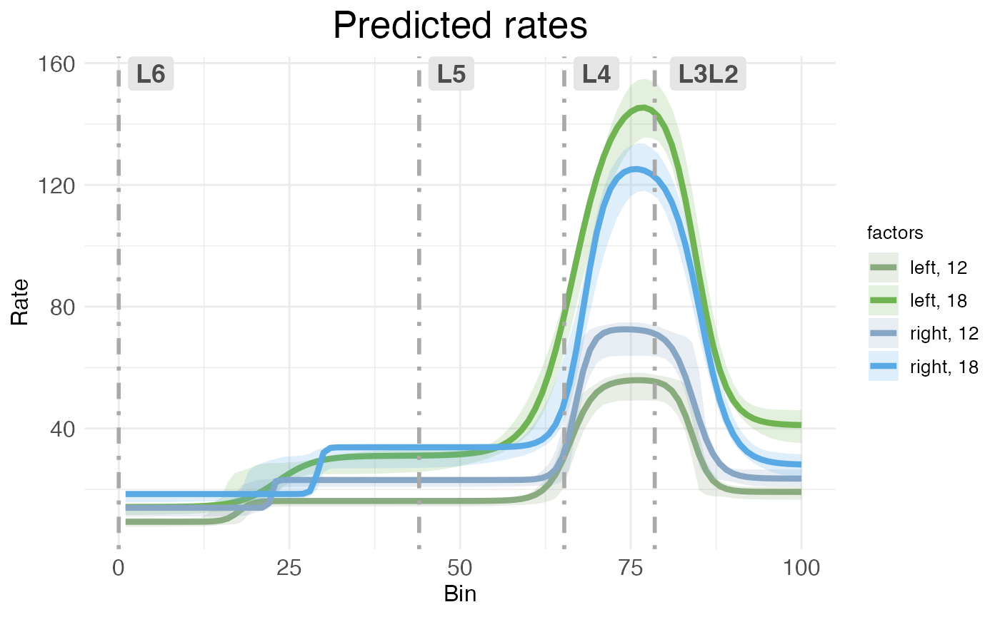
CI rate-count plots are straightforward to interpret: The horizontal (x) axis shows spatial position along the modeled spatial dimension, the vertical (y) axis shows predicated rate. The solid line represents predicated rate, after random effects have been filtered out. The shaded ribbons show the 95% confidence interval around the predicated rate. As explained in the RORB tutorial, this confidence interval is computed without any multiple comparison correction (unlike p-values, which are corrected for multiple comparisons). Note that the different ribbon sizes in this plot compared to the plot from the RORB tutorial are due to using bootstraps instead of MCMC samples.
Both kinds of rate-count plots separate treatment conditions. In this data, we have two covariates, hemisphere and age, each with two levels (left vs right for hemisphere, P12 vs P18 for age). Thus, the plot shows the predications for the four possible combinations of covariates (i.e., the reference condition of left-12, plus three treatment conditions).
By default, both kinds of rate-count plots show rate as a raw value. However, it’s possible to rescale the vertical axis into log form:
plot.ratecount(
model,
dim.boundaries = colMeans(layer.boundary.bins),
species = "Rorb",
log.scale = TRUE
)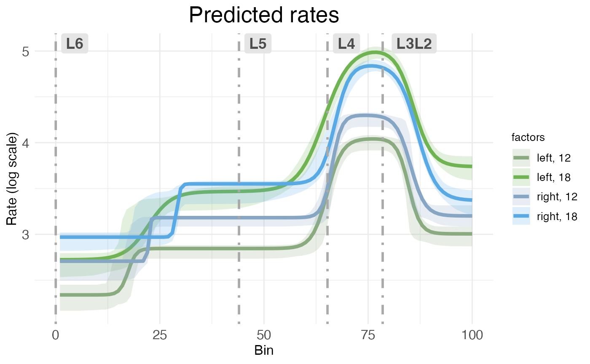
Scatter plots
The second kind of rate-count plot, the scatter rate-count plot, is a more complex plot showing predicted rate without random effects as a line, model fit to individual replicates as dashed lines, and observed counts as scatter points. It’s accessed via the CI_style argument in plot.ratecount:
plot.ratecount(
model,
dim.boundaries = colMeans(layer.boundary.bins),
CI_style = FALSE,
species = "Rorb"
)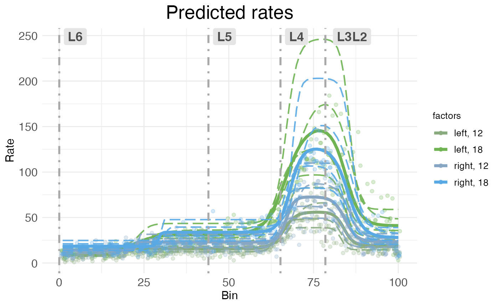
As with CI rate-count plots, the horizontal axis represents spatial position along the modeled dimension, and the vertical axis represents predicted rate.
The main advantages of scatter rate-count plots are that they show how well the model fits the observed data, and also show the variability in individual replicates. Still, they can be visually crowded, so wispack provides a function to decompose them into their components.
plots.decomp <- plot.decomposition(
model,
dim.boundaries = colMeans(layer.boundary.bins),
species = "Rorb"
)First, let’s look at separate plots of counts (observed vs extrapolated without random effets) and predicted rates (fit of observed counts vs predicted rates without random effects):
grid.arrange(grobs = plots.decomp[2:5], ncol = 2)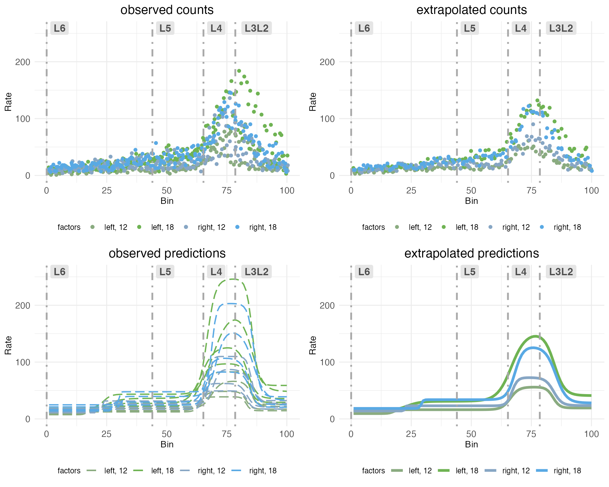
The upper left plot (observed counts) shows one point for the total count of RORB transcripts observed in a given replicate at a given spatial bin. The upper right plot (extrapolated counts) shows extrapolated counts got by taking the mean of the actual replicates within in bin. These means stand in for observations from a hypothetical replicate with no noise or other random effects. The lower left plot (observed predictions) shows the model fit to the observed counts. The lower right plot (extrapolated predictions) shows the fit to the extrapolated counts, which serves as a stand in for the predicted rate without random effects.
Next, let’s look at observed counts (points) and their fits (dashed lines) on the same plot, but broken out by sample:
grid.arrange(grobs = plots.decomp[7:length(plots.decomp)], ncol = 2)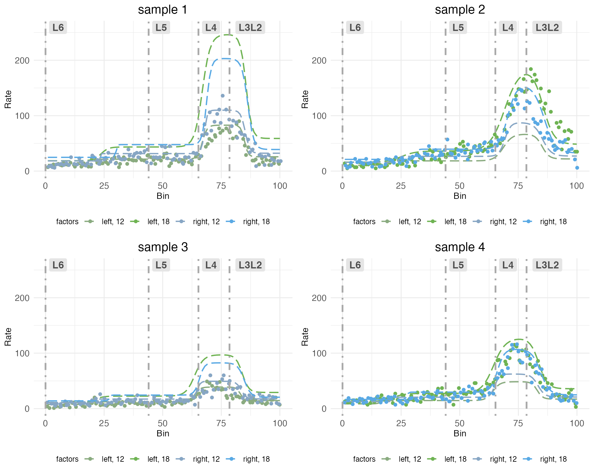
Notice how each plot has two dashed lines which fit the observed counts well, and two which do not. This is because the model is fit to each sample in all treatment conditions. The treatment conditions are got by the interaction of covariates hemisphere and age. Although each sample includes both hemispheres, it can only include one age. The model pulls information across samples to extrapolate the fit for the missing treatment conditions. Thus, some of the dashed lines represent fits to observed counts in treatment conditions that were not actually observed in that sample.
Time-series plots
For models fit with a covariate specified as a time series, wispack provides a function to plot predicted rates as a function of time. This is done with the plot.timeseries function. Although there are only two ages in the cortical laminar data, we can still use this function to visualize how predicted rates change with age. Let’s look at the time-series plot for RORB again:
plot.timeseries(
model,
species = "Rorb"
)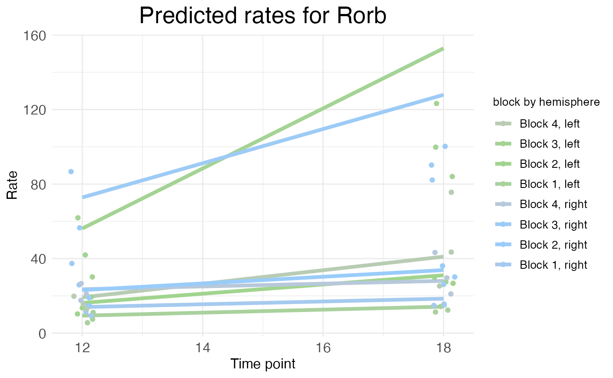
As explained in the time series tutorial, the rate represented by the height of the solid lines is the rate parameter itself (for each block), not the actual predicted rate. The actual predicated rate at a given bin (or the mean predicated rate across an entire block) can be lower than the rate parameter, depending on the slope parameters of the transitions. In time series plots, the points represent the mean observed rate across an entire block (with random effects filtered out). Thus, as is the case in this example, the distance between the observed points and the predicted rates is not necessarily a sign of a bad fit. As can be seen in the rate-count plots above, the fit is quite good.
Parameter plots
Rate-count and time-series plots show observed and predicted gene expression rates as a function of spatial position, time, and (at least implicitly) treatment conditions. However, with the exception of time-series plots showing rate parameters, these plots do not directly show the underlying rate, transition point, and slope parameters – or the corresponding random-effect scalars – that define a wisp model.
plots.param <- plot.parameters(
model,
species = "Rorb"
)The plot.parameters function produces separate plots for the baseline (reference condition) parameters, the treatment condition parameters, and the random-effect scalars. Let’s look at the baseline parameters first:
plots.param$plot_baseline_cortex_Rorb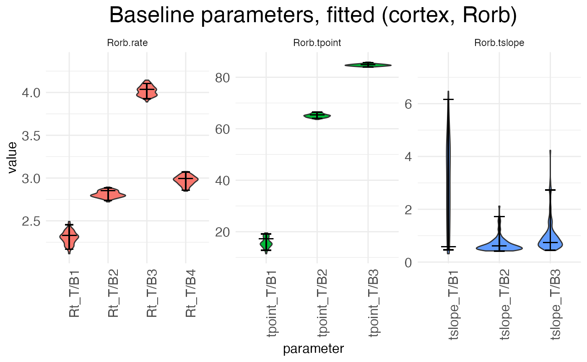
There are three separate plots: Rorb.rate gives the baseline (left,
P12) block rates in log space, Rorb.tpoint gives the baseline transition
point locations, and Rorb.tslope gives the baseline transition slopes
for each of the three transition points. The horizontal axis tick labels
are formatted as
_T/B
There are three true (i.e., non-baseline) treatment conditions: the left hemisphere at P18, the right hemisphere at P12, and the right hemisphere at P18. Let’s look first at the parameters giving the effect of switching hemispheres in the reference condition, i.e., the shift from left to right hemisphere at P12:
plots.param$plot_treatment_right_cortex_Rorb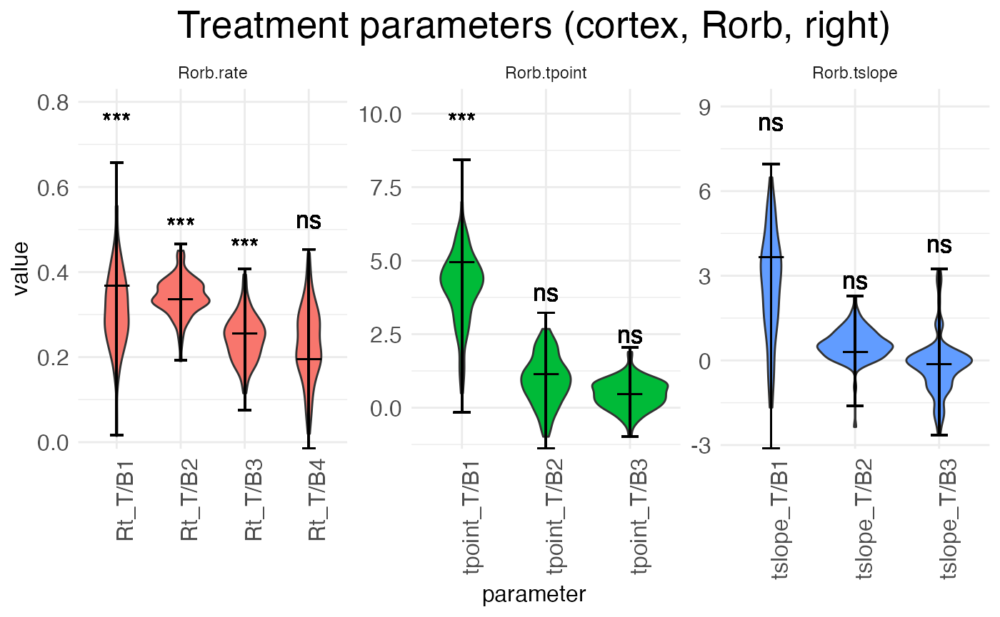
Notice that interpreting the parameters in the baseline condition is straightforward. For example, Rt_T/B2 is the actual rate in block 2. However, the parameters for the treatment conditions are additive offsets, i.e., log-fold changes. Thus, positive parameter values represent an increase in the value, while negative parameter values represent a decrease in the value.
Another point of difference between the baseline and (true) treatment condition parameters is that the latter are tested for significance against a null hypothesis of zero (no change from baseline). The results of these tests are shown above the parameter in the typical notation: “ns” is not significant, “*” is p < 0.05, “**” is p < 0.01, and “***” is p < 0.001.
plots.param$plot_treatment_18_cortex_Rorb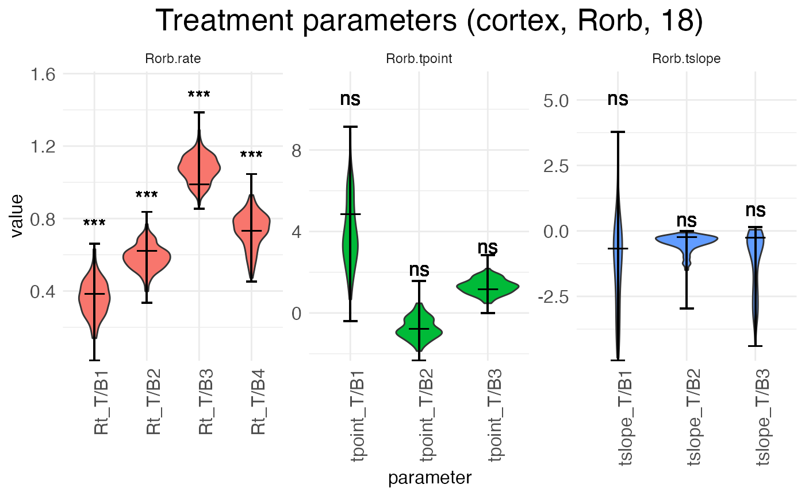
The above plot shows the parameters for the effect of age (the shift from P12 to P18) in the reference condition (left hemisphere). The next plot shows the interaction effect of age in the right hemisphere:
plots.param$plot_treatment_right18_cortex_Rorb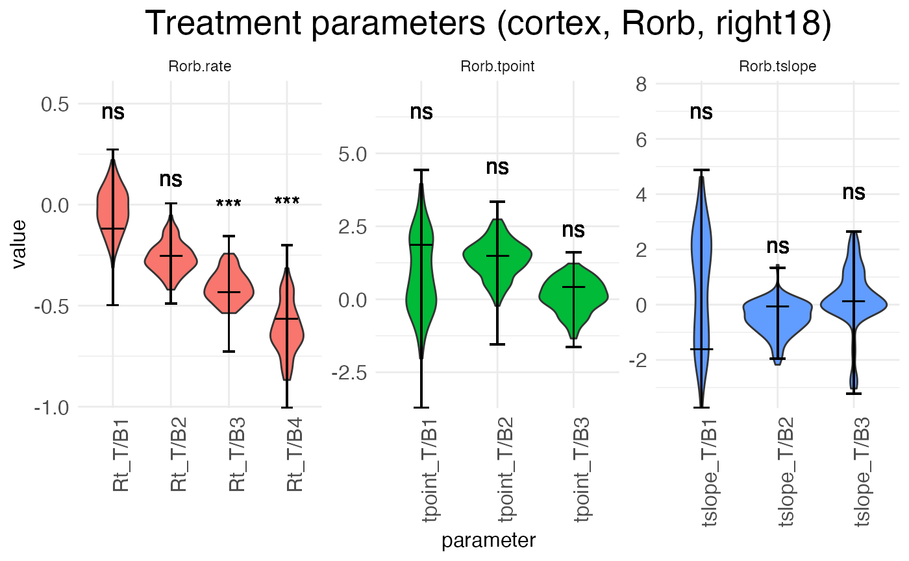
Finally, we can look at the random-effect scalars for each parameter:
plots.param$plot_ranEff_cortex_Rorb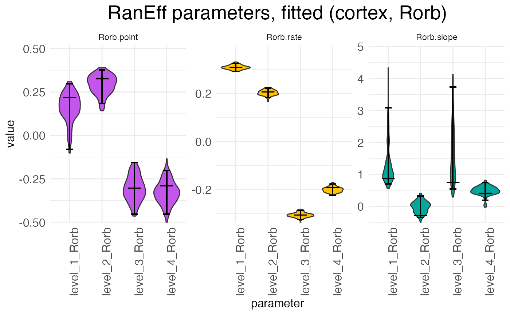
There is one scalar for each parameter type (rate, transition point, transition slope), with each sample (i.e., replicate) having its own set of scalars. For example, in the above plot we can see at a glance that samples 1 and 2 have rates that are higher than expected while samples 3 and 4 have rates that are lower than expected. The exact interpretation of the random-effect parameters is discussed in the warping tutorial.